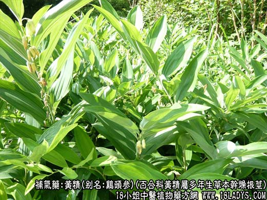
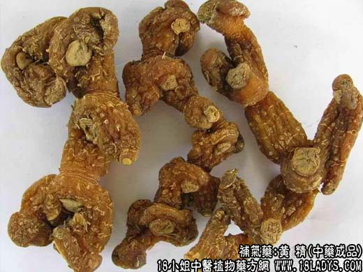
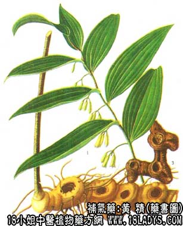

黄精为常用中药。始载《名医别录》列为上品。植物来源较多，商品分鸡头黄精和姜形黄精两种。
1、鸡头黄精
来源：为百合科黄精属多年生草本植物黄精和少数热河黄精以及狭叶黄精等的干燥根茎。多为野生，亦有栽培。
产地：主产于华北地区，此外东北三省以及山东、河南、陕西等亦有生产。
采集加工：春秋两季均可采挖，挖出根茎，洗净泥土，除去地上部分及须根，晒2~3天，至表面稍干，内部变软，用特制笼筐轻撞一遍，撞去外层薄皮，并使柔软，再边晒边用手揉搓3~5遍，使成半透明状，用后晒干，再撞一遍，使用表皮光亮即成。
性状鉴别：呈不规则的圆锥形或圆柱形，一端膨大，常有1~数个粗短的突起火小分枝，形似鸡头，并有1~3个茎基疤痕，呈圆点状，形似鸡眼。长3~10厘米，直径粗端1~2.5厘米，细端5~8毫米。表面黄白色至黄棕色，半透明。全体有细纵皱纹及较明显的波状环节纹。须根痕呈状突起，多集于膨大部分。质硬，未完全干燥者质柔韧，易折断，断面单棕色，角质样，可见多数散在黄色维管束小点。气微，味微甜美，有粘性。
2、姜形黄精
来源：为百合科黄精属多年生草本植物长叶黄精多花黄精以及卷叶黄精等的干燥根茎。有野生、有栽培。
产地：主产于贵州、湖南、湖北、四川、云南、安徽、浙江、广东、广西，此外甘肃、青海等地亦产。
采集加工：全年均可采挖，挖回根茎，除去地上部分及须根，洗净泥土，放在蒸笼内加水蒸煮，至显油润取出，晒干或烘干即成。
性状鉴别：呈不规则的结节块状，略扁平似姜形，长3~10厘米，宽2~4厘米，厚1~2厘米。表面土黄棕色，粗糙，有不规则的皱纹，地上茎痕呈圆盘状，常凹陷。须根多呈疣状突起，全体均有分布。节明显，呈隆起的波状环形。余与鸡头黄精同。
以上两种黄精均以根茎肥大，色黄白，断面角质，光亮者为佳。
主要成分：含生物硷、淀粉、醣等。
药理作用：1、滋补强壮作用。
2、抑菌。对伤寒杆菌、金黄色葡萄球菌、石膏样毛发癣菌、柯氏型表皮癣菌等均有抑制作用。
此外，黄精对豚鼠的实验结核病有显著疗效，能明显改善健康状况。又家兔试验，黄精具有防止动脉粥样硬化的效果。
炮制：蒸至黑红色，切咀。北京加黄酒蒸。
性味：甘、微温。
归经：如脾，肺、胃经。
主治：脾尾虚弱，肺虚咳嗽，消渴（糖尿病）等症。并有降低血压作用。
临床应用：1、用于病后体弱，或慢性病消耗营养不良。作为滋养强壮剂，多配杞子、生地、黄芪、党参等，方如黄精汤、又可配白术、天冬、枸杞根等浸酒。
2、用于肺结核病。初步观察疗效较好，与实验室研究所得结果一致。可用黄精熬膏（5kg生药熬成1kg浸膏），每日4次，每次40毫升（约51~54g），长期服用，无副作用。
3、治股癣、足癣，用2%黄精提取液局部涂布。
使用注意：黄精宜九蒸九晒使用；消化不良和有湿痰者忌用。
用量：9~30g。
处方举例：黄精汤：黄精18g，杞子9g，生地15g，黄芪9g，党参9g，水煎服。
注：1、过去两种黄精，均生产地销。现已通用。唯西南地区，尚有多种黄精属植物，其中有的根茎味苦而不甜，不宜药用。
2、北方产的鸡头黄精和北方产地饿玉竹经常混淆。按黄精与玉竹同为百合科黄精属植物，亲缘甚近，品种较多，效用是否一致，尚待深入研究。但历代本草记载，其功效略有差异，并指出两者的区分，如陶弘景谓：“萎蕤（玉竹）根入荻根及菖蒲，概节而平直。黄精根如鬼臼，黄精大节而不平”。说明条细长，平直，粗细均匀，节多而明显的是玉竹。呈结节一端大一端小，节不甚明显的是黄精。其效用的异同在未作出新的科学论断之前，仍应进行区分，不宜混淆使用。